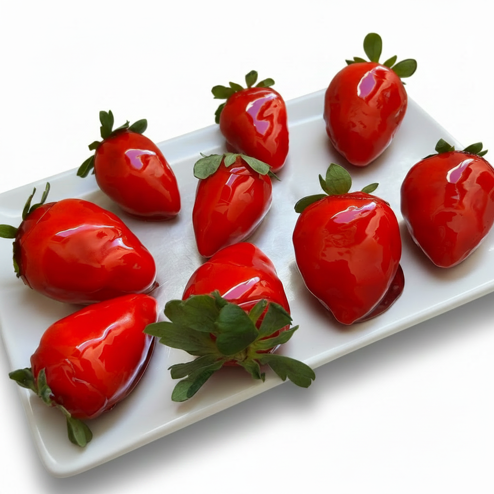
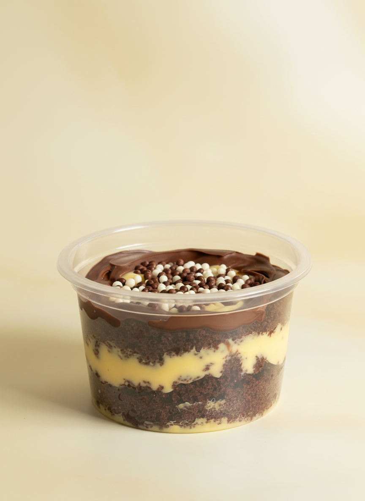

Pão de Mel
Carro-chefe da casa 🏆
Doces feitos com carinho desde 2023 — pão de mel, bolos de pote, morangos do amor e muito mais.
Peça agora no iFood Pedido especial? Fale com a gente →Tudo começou em 2023, com pães de mel caseiros feitos num domingo qualquer — e virou paixão, depois negócio. Hoje a LS Gourmet atende toda a região de Campinas.
Conheça nossa história completa →Carro-chefe da casa 🏆


Campinas, SP — e também no iFood!
Ver endereço completo →